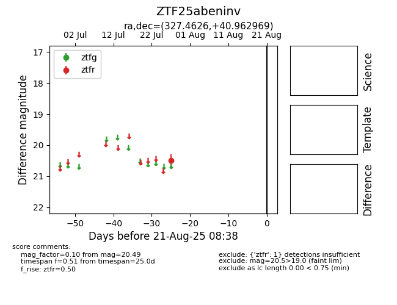

Target ZTF25abeninv at 2025-08-21 08:38, see:
FINK: fink-portal.org/ZTF25abeninv
Lasair: lasair-ztf.lsst.ac.uk/objects/ZTF25abeninv
ALeRCE: alerce.online/object/ZTF25abeninv
alt names
ZTF25abeninv (ztf,alerce)
coordinates:
equatorial (ra, dec) = (327.4626,+40.96297)
galactic (l, b) = (89.8474,-9.96143)
photometry
last ztfr=20.49
1 ztfr detections
